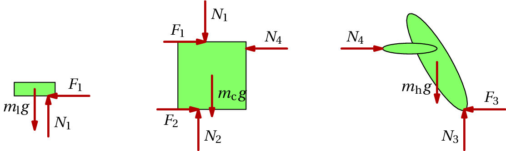
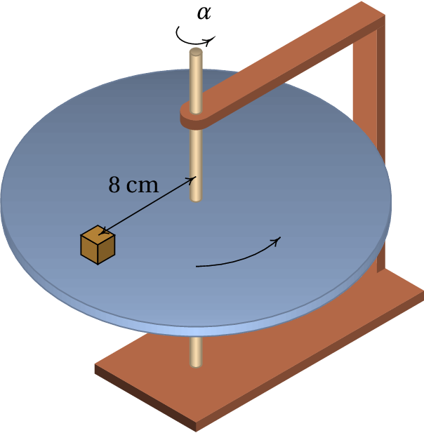

Uma pessoa com 70 kg sobe num ascensor até o sexto andar de um prédio. O ascensor parte do repouso no rés de chão, acelera até o segundo andar, com aceleração uniforme de 2 m/s2, mantém a velocidade constante entre o segundo e o quarto andar e trava entre o quarto e o sexto andar, com aceleração uniforme de −2 m/s2. Determine o módulo da reação normal nos pés da pessoa, em cada parte do percurso.
A figura mostra o diagrama de corpo livre da pessoa, onde é a reação normal do chão do elevador nos seus pés. Definindo o sentido positivo de baixo para cima, a soma das duas forças externas é então
Entre o rés de chão e o segundo andar a força resultante aponta para cima e, assim sendo
Entre o segundo e o quarto andar, a força resultante é nula
Finalmente, entre o quarto e o sexto andar, a força resultante é negativa, porque aponta para baixo
Um homem com 72 kg empurra uma caixa de madeira com 8 kg sobre um chão horizontal, exercendo uma força horizontal nela que a faz deslizar no chão. Sobre a caixa está pousado um livro com 0.6 kg. O homem, a caixa e o livro deslocam-se conjuntamente, com aceleração igual a 0.5 m/s2. Determine os valores das forças de atrito entre o chão e a caixa, entre a caixa e o livro e entre o chão e os pés do homem, ignorando a resistência do ar e sabendo que os coeficientes de atrito estático ( ) e atrito cinético ( ) são: entre o chão e a caixa, e ; entre a caixa e o livro, e ; entre o chão e os pés do homem, e .
Existem quatro pontos de contacto entre corpos rígidos:
Em 1 há reação normal, , vertical, e força horizontal, , de atrito estático porque o livro não está a deslizar sobre a caixa. Em 2 há força de reação normal, , vertical, e força horizontal, , de atrito cinético, porque a caixa desliza sobre o chão. Em 3 há reação normal, , vertical, e força horizontal, , de atrito estático porque os pés do homem não derrapam sobre o chão. Em 4 há apenas reação normal, , porque o enunciado diz que a força que o homem exerce na caixa é horizontal. A figura seguinte mostra os diagramas de corpo livre do livro, da caixa e do homem.
No livro, aponta para a esquerda, porque o livro acelera para a esquerda. O mesmo acontece com a força no homem. Essas duas forças de atrito estático não podem ultrapassar o valor máximo, , mas podem ter qualquer valor entre 0 e esse valor máximo. A força de atrito cinético é no sentido oposto ao movimento da caixa e tem módulo igual a . Os pesos do livro, da caixa e do homem são: N, N e N.
As duas equações de movimento de translação do livro são (unidades SI):
As equações de movimento de translação da caixa são:
E as equações de movimento de translação do homem são:
O valor máximo que pode ter é e o valor máximo possível de é . Como os resultados obtidos não ultrapassam esses valores máximos, esses resultados são válidos e a resposta é: a força de atrito entre a caixa e o livro é 0.3 N, a força de atrito entre a caixa e o chão é 0.2×84.28 = 16.856 N e a força de atrito entre o chão e os pés do homem é 57.156 N.
Um automóvel com 1230 kg sobe uma rampa com declive de 8 por cento,
com velocidade constante. Determine:
(a) O valor da força de atrito total (soma das forças nos quatro
pneus).
(b) O valor mínimo do coeficiente de atrito estático entre a estrada e
os pneus para que o automóvel consiga subir a rampa.
A figura mostra o diagrama de corpo livre do automóvel, onde e são a soma das reações normais e das forças de atrito nos quatro pneus (para que aponte no sentido do movimento, deve ser atrito estático, pelo menos em alguns dos pneus). Como a velocidade é linear e constante, a aceleração é nula e a soma das forças externas também. Usando os dois eixos indicados na figura, as somas das componentes e das forças devem ser ambas nulas
(a) Como o ângulo é igual à inclinação da rampa, então a segunda equação conduz a
(b) A reação normal determina-se resolvendo a condição da soma das componentes das forças
E como,
então
Este problema também podia ser resolvido colocando as três forças uma a continuação da outra, como se mostra na figura ao lado. Como a força resultante é nula, os três vetores formam um triângulo, que neste caso é retângulo e semelhante ao triângulo da rampa. Por semelhança de triângulos conclui-se que a força de atrito é igual a , a reação normal é igual a e o coeficiente de atrito mínimo é 8/100.
Uma esfera de raio e massa volúmica cai livremente dentro de um fluido com massa volúmica e coeficiente de viscosidade . (a) Encontre as expressões para a velocidade terminal quando a resistência do fluido é proporcional à velocidade ou quando é proporcional ao quadrado da velocidade. (b) Calcule a velocidade terminal dentro de glicerina, água e ar de uma esfera de aço (massa volúmica 7800 kg/m3) e diâmetro de 1 cm; em cada caso determine o valor do número de Reynolds. Use os dados na tabela seguinte:
| Fluido | Viscosidade (kg/(m·s)) | Massa volúmica (kg/m3) |
| Glicerina | 1.5 | 1200 |
| Água | 10−3 | 1000 |
| Ar | 1.8×10−5 | 1.2 |
(a) A figura mostra o diagrama de corpo livre da esfera, onde é igual à massa da esfera menos a massa do fluido que ocuparia o mesmo volume da esfera e é a força de resistência do fluído, que inicialmente é nula, mas aumenta à medida que a velocidade da esfera aumenta. No instante em que o módulo da força de resistência seja igual ao peso, a aceleração será nula, a esfera atingirá a velocidade limite constante e a força de resistência permanecerá também constante. Como tal, a condição que permite determinar a velocidade terminal é
No caso da força de resistência proporcional à velocidade, a equação 4.12 para uma esfera conduz à seguinte expressão
E no caso da força de resistência proporcional ao quadrado da velocidade, a equação 4.14 para uma esfera conduz à seguinte expressão
(b) Na glicerina, como a viscosidade é elevada, admite-se que a força de resistência seja proporcional à velocidade e, assim sendo, a velocidade terminal da esfera é
Usando o raio da esfera, o número de Reynolds é
Que por ser da ordem de grandeza das unidades corrobora que a força de resistência sim é proporcional à velocidade. Os mesmos cálculos no caso da água conduzem aos seguintes resultados
Que é um resultando inconsistente, porque o número de Reynolds é da ordem dos milhões. Isso implica que é necessário repetir os cálculos admitindo que a força de resistência é proporcional ao quadrado da velocidade
Que sim é um resultado consistente. Repetindo os mesmos cálculos para o caso do ar, encontra-se
Para medir o coeficiente de atrito estático entre um bloco e um disco, fez-se rodar o disco com uma aceleração angular constante. O disco parte do repouso em e no instante o bloco começa a derrapar sobre o disco. Determine o valor do coeficiente de atrito estático.
A figura mostra o diagrama de corpo livre do bloco, onde é a reação normal e a força de atrito estático. Como não há movimento vertical, a reação normal é igual ao peso e a força de atrito é a força resultante . Enquanto o bloco acompanha o movimento do disco, a sua aceleração é a mesma aceleração do movimento circular do disco, ou seja
No instante em que o bloco começa a derrapar, a força de atrito estático é máxima, e
Para encontrar a velocidade angular no instante em que o bloco começa a derrapar, integra-se a equação que relaciona a aceleração angular com a velocidade angular e o tempo, . Usando o método de separação de variáveis,
E substituindo na expressão para o coeficiente de atrito